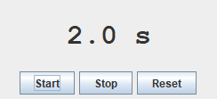
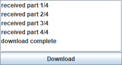
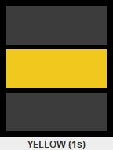

เมื่อจบบทนี้ นิสิตจะทำได้ อธิบายบทบาทของ Event Dispatch Thread ใช้ javax.swing.Timer สำหรับ event ตามช่วงเวลา แยกงานที่ใช้เวลานานไปทำเบื้องหลังด้วย Thread และ SwingWorker อัปเดต Swing component บน EDT เท่านั้น
ให้หน้าต่างตอบสนองเสมอ
Swing event handler ทำงานบน Event Dispatch Thread (EDT) ซึ่งมีหน้าที่รับ event และวาด/อัปเดต UI ถ้า handler หยุดรอนาน event อื่นและการวาดหน้าจอจะรอไปด้วย บทนี้เริ่มจาก thread ใน console เพื่อเข้าใจแนวคิด แล้วจึงนำไปใช้กับ Swing ภาพหน้าต่างถ่ายหลังโปรแกรมทำงานไประยะหนึ่ง (ระบุเวลาในคำบรรยายภาพ)
S2.1 Thread และ Event Dispatch Thread
Thread คือเส้นทางการทำงานหนึ่งเส้นในโปรแกรม โปรแกรมทั่วไปเริ่มด้วย thread ชื่อ main โปรแกรม Swing มีอีก thread คือ EDT ที่รอ event และวาดหน้าจอ เราสร้าง thread เพิ่มเพื่อทำงานพร้อมกันได้
ตัวอย่าง S2.1.1 สอง thread ทำงานสลับกัน (console)แนวคิด: สร้าง Thread ด้วย lambda แล้ว start() — main และ worker ทำงานคู่ขนาน join() รอให้ worker จบก่อนทำต่อ
TwoThreads.java
public class TwoThreads {
// join() อาจโยน InterruptedException
public static void main (String [] args) throws InterruptedException {
// สร้าง thread ใหม่ พร้อมงานที่จะทำ
Thread worker = new Thread (() -> {
for (int i = 1 ; i <= 3 ; i++) {
System .out.println ("worker step " + i);
sleep (120 ); // หยุดรอ 120 มิลลิวินาที
}
});
// เริ่มทำงานคู่ขนานกับ main
worker.start ();
// main ทำงานของตัวเองต่อไป
for (int i = 1 ; i <= 3 ; i++) {
System .out.println ("main step " + i);
sleep (100 );
}
worker.join (); // รอให้ worker ทำเสร็จ
System .out.println ("both finished" );
}
static void sleep (int ms) {
// Thread.sleep บังคับให้จัดการ InterruptedException
try { Thread .sleep (ms); } catch (InterruptedException e) { }
}
}ผลลัพธ์ worker step 1
main step 1
main step 2
worker step 2
main step 3
worker step 3
both finished อธิบายทีละขั้น start() เริ่ม thread ใหม่ทันที main ไม่รอ ข้อความของสอง thread สลับกัน ลำดับอาจต่างเล็กน้อยในแต่ละครั้งที่รัน join() ทำให้ main รอ worker จบก่อนพิมพ์ “both finished” ทดลองบั๊ก S2.1.2 Thread.sleep บน EDT ทำหน้าต่างค้างแนวคิด: listener เปลี่ยนข้อความเป็น Working... แล้ว sleep 2 วินาที — แต่หน้าจอไม่ได้วาดข้อความนั้นเลย เพราะ EDT ถูกบล็อก ปุ่มยังค้างในสถานะถูกกด
FrozenUi.java
import javax.swing.*;
import java.awt.*;
public class FrozenUi {
public static void main (String [] args) {
SwingUtilities .invokeLater (() -> {
JFrame frame = new JFrame ("Frozen" );
frame.setDefaultCloseOperation (JFrame .EXIT_ON_CLOSE );
JLabel status = new JLabel ("Idle" , SwingConstants .CENTER );
JButton start = new JButton ("Start (blocking)" );
start.addActionListener (e -> {
// ข้อความนี้ยังไม่ทันแสดง
status.setText ("Working..." );
try {
// หยุด EDT 2 วินาที → หน้าจอค้าง
Thread .sleep (2000 );
} catch (InterruptedException ex) { }
// หน้าจอเห็นแค่ข้อความสุดท้าย
status.setText ("Done" );
});
frame.add (status, BorderLayout .CENTER );
frame.add (start, BorderLayout .SOUTH );
frame.setSize (260 , 120 );
frame.setVisible (true );
});
}
}หน้าต่างที่ได้ (ภาพจากโปรแกรมจริง) ภาพแรกที่จับได้หลังคลิก — ได้เมื่อ EDT ว่างแล้วเท่านั้น (หลัง 2 วินาที)
Frozen
อธิบายทีละขั้น setText("Working...") แค่บันทึกว่าต้องวาดใหม่ การวาดจริงทำโดย EDT ภายหลัง แต่ EDT กำลัง sleep อยู่ใน listener จึงไม่มีโอกาสวาด แม้แต่โปรแกรมที่ใช้ถ่ายภาพหน้าจอนี้ก็ต้องรอ EDT ว่าง — ภาพแรกที่ได้จึงเป็น Done ทันที ไม่เคยมีจังหวะที่หน้าจอแสดง Working... ระหว่าง 2 วินาทีนั้นหน้าต่างไม่ตอบสนอง ย้าย/ย่อ/กดปุ่มไม่ได้ ลองคิดก่อน · ทำไมค้าง ถ้าระหว่าง listener ข้างต้น sleep ผู้ใช้คลิกปุ่มอื่นอีก 3 ครั้ง จะเกิดอะไรขึ้น
ดูคำตอบ การคลิกถูกเก็บไว้ในคิว event และจะถูกประมวลผลต่อกันทันทีหลัง listener แรกจบ — ผู้ใช้จะรู้สึกว่าโปรแกรมไม่ตอบสนองแล้วกระตุก
S2.2 javax.swing.Timer: งานตามช่วงเวลา
new Timer(delayMs, listener) เรียก listener ซ้ำทุก delay มิลลิวินาที บน EDT จึงแก้ component ได้ปลอดภัยและไม่บล็อกหน้าจอระหว่างรอ ใช้กับนาฬิกา นับถอยหลัง แอนิเมชันง่าย ๆ (ระวัง: ใช้ javax.swing.Timer ไม่ใช่ java.util.Timer)
ตัวอย่าง S2.2.1 นับถอยหลัง 10 วินาทีแนวคิด: Timer ทุก 1000 ms ลดตัวเลขทีละ 1 และหยุดตัวเองด้วย timer.stop() เมื่อถึง 0
Countdown.java
import javax.swing.*;
import java.awt.*;
public class Countdown {
private static int seconds = 10 ; // วินาทีที่เหลือ
public static void main (String [] args) {
SwingUtilities .invokeLater (() -> {
JFrame frame = new JFrame ("Countdown" );
frame.setDefaultCloseOperation (JFrame .EXIT_ON_CLOSE );
JLabel label = new JLabel ("10" , SwingConstants .CENTER );
label.setFont (new Font ("SansSerif" , Font .BOLD , 40 ));
JButton start = new JButton ("Start" );
// javax.swing.Timer: ทำงานทุก 1000 ms บน EDT
Timer timer = new Timer (1000 , null );
// โค้ดที่ทำทุกครั้งที่ Timer ครบรอบ
timer.addActionListener (e -> {
seconds--;
// แก้ UI ได้ปลอดภัย เพราะอยู่บน EDT
label.setText (String .valueOf (seconds));
if (seconds == 0 ) {
timer.stop (); // ครบเวลา → หยุด Timer
label.setText ("Time's up!" );
start.setEnabled (true );
}
});
start.addActionListener (e -> {
seconds = 10 ; // รีเซ็ตก่อนเริ่มใหม่
label.setText ("10" );
start.setEnabled (false );
timer.start (); // เริ่มนับ
});
frame.add (label, BorderLayout .CENTER );
frame.add (start, BorderLayout .SOUTH );
frame.setSize (240 , 160 );
frame.setVisible (true );
});
}
}หน้าต่างที่ได้ (ภาพจากโปรแกรมจริง) ประมาณ 3 วินาทีหลังคลิก Start
Countdown
อธิบายทีละขั้น สร้าง Timer ก่อน แล้วเพิ่ม listener ทีหลังเพื่อให้ lambda อ้างถึงตัวแปร timer ได้ ทุกวินาที listener ทำงานบน EDT และแก้ label ได้ตรง ๆ ระหว่างรอระหว่าง tick หน้าต่างยังตอบสนองปกติ ปุ่ม Start ปิดระหว่างนับ ป้องกันเริ่มซ้อน ตัวอย่าง S2.2.2 นาฬิกาจับเวลา Start / Stop / Resetแนวคิด: ใช้ Timer ถี่ (100 ms) เพื่อแสดงทศนิยม แต่คำนวณเวลาจริงจาก System.currentTimeMillis() — แม่นกว่าการนับ tick เพราะ Timer อาจมาช้าเล็กน้อย
Stopwatch.java
import javax.swing.*;
import java.awt.*;
public class Stopwatch {
// เวลาที่กด Start ล่าสุด
private static long startMillis;
// เวลาสะสมจากรอบก่อน ๆ
private static long accumulated = 0 ;
public static void main (String [] args) {
SwingUtilities .invokeLater (() -> {
JFrame frame = new JFrame ("Stopwatch" );
frame.setDefaultCloseOperation (JFrame .EXIT_ON_CLOSE );
JLabel display = new JLabel ("0.0 s" , SwingConstants .CENTER );
display.setFont (new Font ("Monospaced" , Font .BOLD , 32 ));
// อัปเดตทุก 100 ms
Timer timer = new Timer (100 , e -> {
// เวลาสะสม + เวลาของรอบนี้
long elapsed = accumulated + System .currentTimeMillis () - startMillis;
display.setText (String .format ("%.1f s" , elapsed / 1000.0 ));
});
JButton start = new JButton ("Start" );
JButton stop = new JButton ("Stop" );
JButton reset = new JButton ("Reset" );
start.addActionListener (e -> {
// กันกด Start ซ้ำขณะเดินอยู่
if (!timer.isRunning ()) {
startMillis = System .currentTimeMillis ();
timer.start ();
}
});
stop.addActionListener (e -> {
if (timer.isRunning ()) {
timer.stop ();
// เก็บเวลาของรอบนี้ไว้
accumulated += System .currentTimeMillis () - startMillis;
}
});
reset.addActionListener (e -> {
timer.stop ();
accumulated = 0 ;
display.setText ("0.0 s" );
});
JPanel buttons = new JPanel ();
buttons.add (start);
buttons.add (stop);
buttons.add (reset);
frame.add (display, BorderLayout .CENTER );
frame.add (buttons, BorderLayout .SOUTH );
frame.setSize (260 , 150 );
frame.setVisible (true );
});
}
}หน้าต่างที่ได้ (ภาพจากโปรแกรมจริง) Start แล้ว Stop หลังประมาณ 1.6 วินาที
Stopwatch

อธิบายทีละขั้น accumulated เก็บเวลารวมของช่วงก่อนหน้า ทำให้ Start ต่อหลัง Stop ได้ timer.isRunning() ป้องกันกด Start ซ้ำ ตัวเลขในภาพอาจต่างเล็กน้อยจาก 1.6 ตามจังหวะเวลาของเครื่อง ตัวอย่าง S2.2.3 แอนิเมชัน: แถบความคืบหน้าและสีที่เปลี่ยนแนวคิด: Timer 50 ms เพิ่มค่า JProgressBar ทีละ 2% และเปลี่ยนสีตามช่วง — เป็นพื้นฐานของแอนิเมชันใน Swing
ProgressAnimation.java
import javax.swing.*;
import java.awt.*;
public class ProgressAnimation {
public static void main (String [] args) {
SwingUtilities .invokeLater (() -> {
JFrame frame = new JFrame ("Loading" );
frame.setDefaultCloseOperation (JFrame .EXIT_ON_CLOSE );
// ค่าต่ำสุด 0, สูงสุด 100
JProgressBar bar = new JProgressBar (0 , 100 );
// แสดงเปอร์เซ็นต์บนแถบ
bar.setStringPainted (true );
JLabel status = new JLabel ("Starting..." , SwingConstants .CENTER );
// ทำทุก 50 ms
Timer timer = new Timer (50 , null );
timer.addActionListener (e -> {
int v = bar.getValue () + 2 ; // เพิ่มทีละ 2%
bar.setValue (v);
// เปลี่ยนสีตามช่วง
bar.setForeground (v < 40 ? new Color (200 , 80 , 60 ) : v < 80 ? new Color (230 , 160 , 30 ) : new Color (60 , 160 , 60 ));
status.setText (v < 100 ? "Loading course data..." : "Ready!" );
// ครบ 100% → หยุด
if (v >= 100 ) timer.stop ();
});
timer.start ();
JPanel p = new JPanel (new GridLayout (2 , 1 , 6 , 6 ));
p.setBorder (BorderFactory .createEmptyBorder (12 , 12 , 12 , 12 ));
p.add (bar);
p.add (status);
frame.setContentPane (p);
frame.setSize (300 , 120 );
frame.setVisible (true );
});
}
}หน้าต่างที่ได้ (ภาพจากโปรแกรมจริง) ประมาณ 1.3 วินาทีหลังเปิดโปรแกรม
Loading
อธิบายทีละขั้น ทุก 50 ms เพิ่ม 2% → ครบ 100% ในประมาณ 2.5 วินาที ภาพที่ประมาณ 1.3 วินาทีจึงอยู่ราวครึ่งทาง สีเปลี่ยนจากแดง → ส้ม → เขียว ตามค่า timer.stop() เมื่อครบ ลองคิดก่อน · Timer ถ้าใช้ while (seconds > 0) { Thread.sleep(1000); seconds--; label.setText(...); } ใน listener ของปุ่ม แทนการใช้ Timer จะเกิดอะไรขึ้น
ดูคำตอบ หน้าต่างค้าง 10 วินาทีและไม่เห็นตัวเลขเปลี่ยนระหว่างนั้น เพราะลูปบล็อก EDT — Timer แบ่งงานเป็นชิ้นสั้น ๆ ทำให้ EDT ว่างวาดหน้าจอระหว่างแต่ละ tick
S2.3 งานเบื้องหลังด้วย SwingWorker
งานที่ใช้เวลานานจริง ๆ (คำนวณหนัก อ่านไฟล์ใหญ่ ดาวน์โหลด) ต้องทำบน thread อื่น แต่ห้ามแก้ component จาก thread นั้น SwingWorker<T, V> จัดการให้: doInBackground() ทำงานบน thread เบื้องหลัง, publish()/process() ส่งความคืบหน้ากลับมาบน EDT, และ done() ทำงานบน EDT เมื่อเสร็จ
เมธอดของ SwingWorker ทำงานบน thread ไหน แผนภาพ
worker.execute ()
│
├── doInBackground () ← background thread (ห้ามแตะ component)
│ publish (x) ───┐
│ ▼
├── process (chunks) ← EDT (อัปเดต progress ได้)
│
└── done () ← EDT (เรียก get() เอาผลลัพธ์ แล้วแสดงผล) ตัวอย่าง S2.3.1 นับจำนวนเฉพาะเบื้องหลังพร้อม progressแนวคิด: หน้าต่างยังตอบสนองระหว่างคำนวณ ความคืบหน้าส่งผ่าน setProgress ซึ่ง SwingWorker แจ้ง listener บน EDT ให้อัตโนมัติ
PrimeWorkerDemo.java
import javax.swing.*;
import java.awt.*;
public class PrimeWorkerDemo {
public static void main (String [] args) {
SwingUtilities .invokeLater (() -> {
JFrame frame = new JFrame ("Background work" );
frame.setDefaultCloseOperation (JFrame .EXIT_ON_CLOSE );
JProgressBar bar = new JProgressBar (0 , 100 );
bar.setStringPainted (true );
JLabel result = new JLabel ("Primes below 2,000,000: ?" , SwingConstants .CENTER );
JButton go = new JButton ("Count primes" );
go.addActionListener (e -> {
// กันกดซ้ำระหว่างทำงาน
go.setEnabled (false );
// <ผลลัพธ์, ค่าระหว่างทาง>
SwingWorker <Integer , Void > worker = new SwingWorker <>() {
@Override
// ทำใน background thread ไม่ใช่ EDT
protected Integer doInBackground () {
int limit = 2_000_000 , count = 0 ;
for (int n = 2 ; n < limit; n++) {
if (isPrime (n)) count++;
// รายงานความคืบหน้า 0-100
if (n % 20_000 == 0 ) setProgress (n * 100 / limit);
}
return count; // ผลลัพธ์ส่งต่อให้ done()
}
@Override
// done() ทำงานบน EDT แก้ UI ได้
protected void done () {
try {
// get() ดึงผลจาก doInBackground
result.setText (String .format ("Primes below 2,000,000: %,d" , get ()));
} catch (Exception ex) {
result.setText ("Error: " + ex.getMessage ());
}
bar.setValue (100 );
go.setEnabled (true );
}
};
// รับการแจ้งเปลี่ยนค่า progress
worker.addPropertyChangeListener (ev -> {
if ("progress" .equals (ev.getPropertyName ())) bar.setValue ((Integer ) ev.getNewValue ());
});
worker.execute (); // เริ่มทำงานใน background
});
JPanel p = new JPanel (new GridLayout (3 , 1 , 6 , 6 ));
p.setBorder (BorderFactory .createEmptyBorder (10 , 10 , 10 , 10 ));
p.add (go);
p.add (bar);
p.add (result);
frame.setContentPane (p);
frame.setSize (320 , 150 );
frame.setVisible (true );
});
}
static boolean isPrime (int n) {
// (long) กัน d * d ล้นช่วง int
for (int d = 2 ; (long ) d * d <= n; d++) if (n % d == 0 ) return false ;
return true ;
}
}หน้าต่างที่ได้ (ภาพจากโปรแกรมจริง) ประมาณ 2.5 วินาทีหลังคลิก (งานเสร็จแล้ว)
Background work
อธิบายทีละขั้น doInBackground ทำงานบน thread อื่น ไม่แตะ component เลย setProgress (0–100) ปลอดภัยที่จะเรียกจาก background — listener ได้รับบน EDT done() ทำงานบน EDT: get() เอาผลลัพธ์แล้วแสดง ระหว่างคำนวณ ผู้ใช้ยังย้ายหน้าต่างหรือคลิกส่วนอื่นได้ ตัวอย่าง S2.3.2 invokeLater: ส่งงานกลับมาที่ EDT จาก Thread ธรรมดาแนวคิด: ถ้าใช้ Thread เองแทน SwingWorker ทุกการแก้ component ต้องห่อด้วย SwingUtilities.invokeLater เพื่อส่งงานนั้นกลับไปทำบน EDT
ManualThreadDemo.java
import javax.swing.*;
import java.awt.*;
public class ManualThreadDemo {
public static void main (String [] args) {
SwingUtilities .invokeLater (() -> {
JFrame frame = new JFrame ("Fake download" );
frame.setDefaultCloseOperation (JFrame .EXIT_ON_CLOSE );
DefaultListModel <String > log = new DefaultListModel <>();
JButton download = new JButton ("Download" );
download.addActionListener (e -> {
download.setEnabled (false );
new Thread (() -> { // thread ที่สร้างเอง
for (int part = 1 ; part <= 4 ; part++) {
// จำลองการดาวน์โหลดทีละส่วน
try { Thread .sleep (250 ); } catch (InterruptedException ex) { return ; }
// lambda ใช้ได้เฉพาะตัวแปรที่ไม่เปลี่ยนค่า
final int p = part;
// ส่งงานแก้ UI กลับไปทำบน EDT
SwingUtilities .invokeLater (() -> log.addElement ("received part " + p + "/4" ));
}
// เสร็จแล้วแจ้ง UI อีกครั้ง
SwingUtilities .invokeLater (() -> {
log.addElement ("download complete" );
download.setEnabled (true );
});
}).start ();
});
frame.add (new JScrollPane (new JList <>(log)), BorderLayout .CENTER );
frame.add (download, BorderLayout .SOUTH );
frame.setSize (260 , 170 );
frame.setVisible (true );
});
}
}หน้าต่างที่ได้ (ภาพจากโปรแกรมจริง) ประมาณ 1.5 วินาทีหลังคลิก
Fake download

อธิบายทีละขั้น Thread ใหม่ sleep ได้โดยไม่บล็อกหน้าจอ แต่การ addElement ต้องทำบน EDT จึงห่อด้วย invokeLater final int p = part เพราะ lambda ใช้ได้เฉพาะตัวแปรที่ไม่เปลี่ยนค่า (effectively final)SwingWorker มักง่ายและปลอดภัยกว่าวิธีนี้
S2.4 เลือกเครื่องมือและทดสอบ
สถานการณ์ เครื่องมือ เหตุผล อัปเดตทุก n มิลลิวินาที (นาฬิกา, นับถอยหลัง, แอนิเมชัน) javax.swing.Timerทำงานบน EDT แก้ UI ได้ตรง ๆ งานนานครั้งเดียวแล้วแสดงผล SwingWorkerแยก background/EDT ให้ชัด มี progress และ done() งานเบื้องหลังที่ไม่เกี่ยวกับ UI (console) Threadง่ายที่สุด ส่งงานจาก thread อื่นมาแก้ UI SwingUtilities.invokeLaterรับประกันว่าทำบน EDT
ตัวอย่าง S2.4.1 แยก logic เวลาออกจาก Timer เพื่อทดสอบแนวคิด: คลาส CountdownModel ไม่รู้จัก Timer หรือ Swing — มีแค่เมธอด tick() ทดสอบได้ทันทีโดยไม่ต้องรอเวลาจริง แล้วค่อยให้ Timer เรียก tick() ในแอปจริง
CountdownModelTest.java
public class CountdownModelTest {
public static void main (String [] args) {
// ทดสอบ model โดยไม่ต้องรอเวลาจริง
CountdownModel m = new CountdownModel (3 );
System .out.println ("start: " + m.display () + " finished=" + m.isFinished ());
for (int i = 0 ; i < 5 ; i++) {
m.tick (); // เรียก tick เองแทน Timer
System .out.println ("tick " + (i + 1 ) + ": " + m.display () + " finished=" + m.isFinished ());
}
// ทดสอบการแสดงเกิน 1 นาที
CountdownModel long1 = new CountdownModel (125 );
System .out.println ("125 s shows " + long1.display ());
}
}
class CountdownModel { // logic การนับถอยหลัง ไม่มีโค้ด Swing
private int remaining;
CountdownModel (int seconds) { remaining = seconds; }
void tick () {
if (remaining > 0 ) remaining--; // ไม่ให้ติดลบ
}
boolean isFinished () { return remaining == 0 ; }
String display () {
// นาที:วินาที เติม 0 ให้ครบ 2 หลัก
return String .format ("%02d:%02d" , remaining / 60 , remaining % 60 );
}
}ผลลัพธ์ start: 00:03 finished=false
tick 1: 00:02 finished=false
tick 2: 00:01 finished=false
tick 3: 00:00 finished=true
tick 4: 00:00 finished=true
tick 5: 00:00 finished=true
125 s shows 02:05 อธิบายทีละขั้น tick ไม่ลดต่ำกว่า 0 แม้ถูกเรียกเกิน display จัดรูปแบบนาที:วินาที ทดสอบ 5 tick ได้ในพริบตา ไม่ต้องรอ 5 วินาที Checklist เมื่อใช้ thread กับ Swing ไม่มี Thread.sleep หรือลูปยาวใน listener ไม่แก้ component จาก thread อื่นโดยไม่ผ่าน invokeLater / SwingWorker ปิดปุ่มเริ่มระหว่างทำงาน ป้องกันเริ่มงานซ้อน หยุด Timer เมื่อไม่ใช้ (stop) เพื่อไม่ให้ทำงานค้างเบื้องหลัง
แบบฝึกหัดท้ายบท
ข้อที่เป็น GUI ภาพตัวอย่างถ่ายหลังจากโปรแกรมทำงานตามเวลาที่ระบุ ตัวเลขที่เกี่ยวกับเวลาอาจต่างเล็กน้อยเมื่อรันบนเครื่องของนิสิต
ระดับความยาก: ★ ง่าย ★★ ปานกลาง ★★★ ท้าทาย
Exercise S2.1 หาสาเหตุหน้าต่างค้าง★ ง่าย อธิบายว่าทำไมปุ่มที่มี Thread.sleep(5000) ใน ActionListener จึงทำให้หน้าต่างค้าง แล้วเขียนโปรแกรม console ที่สาธิตแนวคิดเดียวกัน: thread หลักทำงานยาว 3 รอบ (รอบละ 200 ms) ขณะที่ thread “ui” พยายามพิมพ์ “refresh” ทุก 100 ms — เวอร์ชันแรกทำงานต่อกันใน thread เดียว เวอร์ชันที่สองแยกเป็นสอง thread ให้เห็นความต่าง
สิ่งที่ต้องทำ ใช้ Thread และ join() แสดงผลทั้งสองเวอร์ชันพร้อมหัวข้อ ตัวอย่างผลลัพธ์ == single thread ==
working 1
working 2
working 3
refresh (late)
refresh (late)
refresh (late)
== two threads ==
working 1
refresh
refresh
working 2
refresh
refresh
working 3
refresh
refresh ใส่รหัสเพื่อดูเฉลย ตัวอย่างคำตอบ BlockingDemo.java
public class BlockingDemo {
public static void main (String [] args) throws InterruptedException {
System .out.println ("== single thread ==" );
// งานยาวทำก่อน
longWork ();
// "วาดจอ" ได้หลังงานยาวจบเท่านั้น
for (int i = 0 ; i < 3 ; i++) System .out.println ("refresh (late)" );
System .out.println ("== two threads ==" );
// thread แยกทำหน้าที่ "วาดจอ"
Thread ui = new Thread (() -> {
for (int i = 0 ; i < 6 ; i++) {
System .out.println ("refresh" );
pause (100 );
}
});
ui.start ();
longWork (); // งานยาวทำบน main thread
ui.join (); // รอ thread ui จบ
}
static void longWork () { // จำลองงานที่ใช้เวลานาน
for (int i = 1 ; i <= 3 ; i++) {
System .out.println ("working " + i);
pause (200 );
}
}
static void pause (int ms) {
try { Thread .sleep (ms); } catch (InterruptedException e) { }
}
}ใน Swing listener ทำงานบน EDT ซึ่งเป็น thread เดียวที่วาดหน้าจอ การ sleep ใน listener จึงเหมือนเวอร์ชันแรก: “refresh” (การวาดหน้าจอ) ต้องรอจนงานยาวจบ ลำดับข้อความในเวอร์ชันสองอาจสลับต่างเล็กน้อยในแต่ละครั้งที่รัน
Exercise S2.2 นาฬิกาดิจิทัล★ ง่าย สร้างหน้าต่างแสดงเวลาปัจจุบันรูปแบบ HH:mm:ss ตัวใหญ่ อัปเดตทุกวินาทีด้วย javax.swing.Timer และแสดงวันที่ด้านล่าง
สิ่งที่ต้องทำ ใช้ java.time.LocalTime.now() และ DateTimeFormatter.ofPattern("HH:mm:ss") เรียกอัปเดตครั้งแรกทันทีก่อน timer.start() เพื่อไม่ให้ว่าง 1 วินาที ตัวอย่างหน้าจอ (ภาพจากโปรแกรมเฉลย) ใส่รหัสเพื่อดูเฉลย ตัวอย่างคำตอบ DigitalClock.java
import javax.swing.*;
import java.awt.*;
import java.time.LocalDate ;
import java.time.LocalTime ;
import java.time.format.DateTimeFormatter ;
public class DigitalClock {
public static void main (String [] args) {
SwingUtilities .invokeLater (() -> {
JFrame frame = new JFrame ("Clock" );
frame.setDefaultCloseOperation (JFrame .EXIT_ON_CLOSE );
// เวลา
JLabel time = new JLabel ("" , SwingConstants .CENTER );
time.setFont (new Font ("Monospaced" , Font .BOLD , 36 ));
// วันที่ปัจจุบัน
JLabel date = new JLabel (LocalDate .now ().toString (), SwingConstants .CENTER );
// รูปแบบ ชั่วโมง:นาที:วินาที
DateTimeFormatter fmt = DateTimeFormatter .ofPattern ("HH:mm:ss" );
// งานอัปเดตเวลา
Runnable update = () -> time.setText (LocalTime .now ().format (fmt));
// แสดงเวลาทันทีไม่ต้องรอ 1 วินาที
update.run ();
// อัปเดตทุก 1 วินาที
new Timer (1000 , e -> update.run ()).start ();
frame.add (time, BorderLayout .CENTER );
frame.add (date, BorderLayout .SOUTH );
frame.setSize (260 , 130 );
frame.setVisible (true );
});
}
}ภาพตัวอย่างแสดงเวลาตอนที่สร้างเอกสารนี้ — เมื่อรันจริงจะเป็นเวลาปัจจุบันของเครื่อง
Exercise S2.3 ตั้งเวลานับถอยหลังจากค่าที่ผู้ใช้ป้อน★★ ปานกลาง ผู้ใช้ป้อนจำนวนวินาที (1–3600) กด Start แล้วแสดงนับถอยหลังรูปแบบ mm:ss ปุ่ม Pause/Resume สลับได้ และเมื่อหมดเวลาให้ข้อความเป็นสีแดง “Time's up!” ตรวจข้อมูลที่ป้อนด้วย (แสดงข้อความ error ถ้าผิด)
สิ่งที่ต้องทำ ใช้ CountdownModel จากหัวข้อ S2.4 แยก logic ปุ่มเดียวเปลี่ยนข้อความระหว่าง Pause และ Resume ภาพตัวอย่าง: ป้อน 75 กด Start รอประมาณ 2 วินาที ตัวอย่างหน้าจอ (ภาพจากโปรแกรมเฉลย) ใส่รหัสเพื่อดูเฉลย ตัวอย่างคำตอบ CustomCountdown.java
import javax.swing.*;
import java.awt.*;
public class CustomCountdown {
// model ปัจจุบัน สร้างใหม่ทุกครั้งที่กด Start
private static CountdownModel model;
public static void main (String [] args) {
SwingUtilities .invokeLater (() -> {
JFrame frame = new JFrame ("Timer" );
frame.setDefaultCloseOperation (JFrame .EXIT_ON_CLOSE );
JTextField input = new JTextField ("60" , 5 );
JButton start = new JButton ("Start" );
JButton pause = new JButton ("Pause" );
pause.setEnabled (false );
JLabel display = new JLabel ("--:--" , SwingConstants .CENTER );
display.setFont (new Font ("Monospaced" , Font .BOLD , 34 ));
// กำหนด listener ภายหลัง
Timer timer = new Timer (1000 , null );
timer.addActionListener (e -> {
// ให้ model นับ
model.tick ();
// แสดงค่าจาก model
display.setText (model.display ());
// หมดเวลา
if (model.isFinished ()) {
timer.stop ();
display.setText ("Time's up!" );
display.setForeground (Color .RED );
pause.setEnabled (false );
start.setEnabled (true );
}
});
start.addActionListener (e -> {
try {
int s = Integer .parseInt (input.getText ().trim ());
// รับ 1-3600 วินาทีเท่านั้น
if (s < 1 || s > 3600 ) throw new NumberFormatException ();
// สร้าง model ใหม่ตามค่าที่กรอก
model = new CountdownModel (s);
display.setForeground (Color .BLACK );
display.setText (model.display ());
timer.start ();
start.setEnabled (false );
pause.setEnabled (true );
pause.setText ("Pause" );
} catch (NumberFormatException ex) {
display.setForeground (Color .RED );
display.setText ("1-3600 only" );
}
});
pause.addActionListener (e -> {
// หยุดชั่วคราว
if (timer.isRunning ()) { timer.stop (); pause.setText ("Resume" ); }
// เดินต่อจากเดิม
else { timer.start (); pause.setText ("Pause" ); }
});
JPanel top = new JPanel ();
top.add (new JLabel ("Seconds:" ));
top.add (input);
top.add (start);
top.add (pause);
frame.add (top, BorderLayout .NORTH );
frame.add (display, BorderLayout .CENTER );
frame.setSize (340 , 150 );
frame.setVisible (true );
});
}
}
class CountdownModel { // model เดียวกับที่ทดสอบไว้
private int remaining;
CountdownModel (int seconds) { remaining = seconds; }
void tick () { if (remaining > 0 ) remaining--; }
boolean isFinished () { return remaining == 0 ; }
String display () { return String .format ("%02d:%02d" , remaining / 60 , remaining % 60 ); }
}Exercise S2.4 ไฟจราจรด้วย Timer★★ ปานกลาง สร้างไฟจราจรด้วย JLabel 3 ดวง (วงกลมแทนด้วยพื้นหลังสี) ที่เปลี่ยนสถานะตามลำดับ เขียว 3 วินาที → เหลือง 1 วินาที → แดง 3 วินาที วนซ้ำ ดวงที่ไม่ติดแสดงเป็นสีเทาเข้ม และแสดงชื่อสถานะกับวินาทีที่เหลือ
สิ่งที่ต้องทำ Timer tick ทุก 1 วินาที และเก็บ state (index ของไฟ, วินาทีที่เหลือ) ระยะเวลาแต่ละสถานะเก็บในอาเรย์ {3, 1, 3} JLabel ต้อง setOpaque(true) เพื่อแสดงสีพื้น ภาพตัวอย่าง: ประมาณ 3.5 วินาทีหลังเริ่ม (ไฟเหลือง) ตัวอย่างหน้าจอ (ภาพจากโปรแกรมเฉลย) Traffic light

ใส่รหัสเพื่อดูเฉลย ตัวอย่างคำตอบ TrafficLight.java
import javax.swing.*;
import java.awt.*;
public class TrafficLight {
// 0 = เขียว, 1 = เหลือง, 2 = แดง
private static int state = 0 ;
// วินาทีที่เหลือของสถานะปัจจุบัน
private static int remaining = 3 ;
static final String [] NAMES = {"GREEN" , "YELLOW" , "RED" };
// ระยะเวลาแต่ละสถานะ
static final int [] DURATION = {3 , 1 , 3 };
// สีของไฟที่ติด
static final Color [] ON = {new Color (40 , 180 , 70 ), new Color (240 , 200 , 30 ), new Color (220 , 50 , 40 )};
public static void main (String [] args) {
SwingUtilities .invokeLater (() -> {
JFrame frame = new JFrame ("Traffic light" );
frame.setDefaultCloseOperation (JFrame .EXIT_ON_CLOSE );
JLabel [] lamps = new JLabel [3 ];
JPanel pole = new JPanel (new GridLayout (3 , 1 , 6 , 6 ));
pole.setBackground (Color .BLACK );
pole.setBorder (BorderFactory .createEmptyBorder (8 , 8 , 8 , 8 ));
for (int i = 2 ; i >= 0 ; i--) {
lamps[i] = new JLabel ();
// ต้อง setOpaque สีพื้นหลังจึงแสดง
lamps[i].setOpaque (true );
lamps[i].setPreferredSize (new Dimension (50 , 40 ));
}
pole.add (lamps[2 ]); // ไฟแดงอยู่บนสุด
pole.add (lamps[1 ]);
pole.add (lamps[0 ]);
JLabel status = new JLabel ("" , SwingConstants .CENTER );
// วาดหลอดไฟตามสถานะ
Runnable paint = () -> {
// หลอดที่ไม่ติดเป็นสีเทา
for (int i = 0 ; i < 3 ; i++) lamps[i].setBackground (i == state ? ON [i] : new Color (60 , 60 , 60 ));
status.setText (NAMES [state] + " (" + remaining + "s)" );
};
paint.run ();
new Timer (1000 , e -> { // เดินทุก 1 วินาที
remaining--;
// หมดเวลา → สถานะถัดไป
if (remaining == 0 ) {
// % 3 วนกลับไปเขียว
state = (state + 1 ) % 3 ;
remaining = DURATION [state];
}
paint.run ();
}).start ();
frame.add (pole, BorderLayout .CENTER );
frame.add (status, BorderLayout .SOUTH );
frame.setSize (160 , 230 );
frame.setVisible (true );
});
}
}ภาพถ่ายหลังเปิดโปรแกรมรวมประมาณ 3.6 วินาที (มีช่วงเริ่มต้นของ harness ~0.9 วินาที) จึงอยู่ในสถานะเหลือง
Exercise S2.5 เกมจับเวลากดปุ่ม (reaction test)★★★ ท้าทาย สร้างเกมทดสอบความไว: กด Ready แล้วรอเวลาสุ่ม 1–3 วินาที (ใช้ Timer แบบครั้งเดียว setRepeats(false)) จากนั้นพื้นหลังเปลี่ยนเป็นสีเขียวพร้อมข้อความ “CLICK!” ผู้เล่นกดปุ่ม Click ให้เร็วที่สุด แสดงเวลาตอบสนองเป็นมิลลิวินาที ถ้ากดก่อนเขียวให้แจ้ง “Too early!” เก็บสถิติเวลาที่ดีที่สุด
สิ่งที่ต้องทำ state: waiting / ready / go ใช้ System.nanoTime() วัดเวลา สุ่มเวลาด้วย Random ภาพตัวอย่าง: กด Click ทันทีหลัง Ready (กดก่อนเวลา) ตัวอย่างหน้าจอ (ภาพจากโปรแกรมเฉลย) ใส่รหัสเพื่อดูเฉลย ตัวอย่างคำตอบ ReactionTest.java
import javax.swing.*;
import java.awt.*;
import java.util.Random ;
public class ReactionTest {
// enum: ค่าที่เป็นไปได้มีแค่ 3 แบบ
private enum State { IDLE , WAITING , GO }
private static State state = State .IDLE ;
// เวลาที่ไฟเขียวติด
private static long goTime;
// เวลาที่ดีที่สุด เริ่มที่ค่ามากสุด
private static long best = Long .MAX_VALUE ;
public static void main (String [] args) {
SwingUtilities .invokeLater (() -> {
JFrame frame = new JFrame ("Reaction test" );
frame.setDefaultCloseOperation (JFrame .EXIT_ON_CLOSE );
JLabel screen = new JLabel ("Press Ready" , SwingConstants .CENTER );
screen.setOpaque (true );
screen.setBackground (Color .LIGHT_GRAY );
screen.setFont (screen.getFont ().deriveFont (Font .BOLD , 20f ));
JLabel stats = new JLabel ("Best: -" );
Random rng = new Random ();
// Timer ครบเวลา → ขึ้นสีเขียว
Timer delay = new Timer (1000 , e -> {
state = State .GO ;
// nanoTime วัดช่วงเวลาได้ละเอียด
goTime = System .nanoTime ();
screen.setBackground (new Color (60 , 180 , 75 ));
screen.setText ("CLICK!" );
});
delay.setRepeats (false ); // ทำครั้งเดียว ไม่วนซ้ำ
JButton ready = new JButton ("Ready" );
JButton click = new JButton ("Click" );
ready.addActionListener (e -> {
state = State .WAITING ;
screen.setBackground (new Color (200 , 60 , 50 ));
screen.setText ("Wait for green..." );
// สุ่มเวลารอ 1-3 วินาที
delay.setInitialDelay (1000 + rng.nextInt (2000 ));
// เริ่มนับเวลาใหม่
delay.restart ();
});
click.addActionListener (e -> {
// กดก่อนไฟเขียว
if (state == State .WAITING ) {
// ยกเลิก Timer ที่รออยู่
delay.stop ();
screen.setBackground (Color .ORANGE );
screen.setText ("Too early!" );
} else if (state == State .GO ) {
// นาโนวินาที → มิลลิวินาที
long ms = (System .nanoTime () - goTime) / 1_000_000 ;
best = Math .min (best, ms);
screen.setBackground (Color .LIGHT_GRAY );
screen.setText (ms + " ms" );
stats.setText ("Best: " + best + " ms" );
}
state = State .IDLE ;
});
JPanel buttons = new JPanel ();
buttons.add (ready);
buttons.add (click);
buttons.add (stats);
frame.add (screen, BorderLayout .CENTER );
frame.add (buttons, BorderLayout .SOUTH );
frame.setSize (320 , 180 );
frame.setVisible (true );
});
}
}enum State คือชนิดข้อมูลที่มีค่าได้เฉพาะที่กำหนด (IDLE, WAITING, GO) อ่านง่ายและปลอดภัยกว่าใช้ int 0/1/2
Exercise S2.6 ประมวลผลไฟล์จำลองด้วย SwingWorker แบบยกเลิกได้★★★ ท้าทาย จำลองการประมวลผลข้อมูล 50 รายการ (แต่ละรายการใช้เวลา 40 ms ด้วย Thread.sleep ใน doInBackground) แสดง progress bar และรายการที่ประมวลผลแล้วใน JTextArea ผ่าน publish/process มีปุ่ม Cancel ที่หยุดงานได้ทันที (worker.cancel(true)) และเมื่อจบให้แสดงว่า “Completed” หรือ “Cancelled after N items”
สิ่งที่ต้องทำ SwingWorker<Integer, String>: ผลลัพธ์คือจำนวนที่ทำเสร็จ, ข้อมูลกลางทางคือข้อความ ใน doInBackground ตรวจ isCancelled() ทุกรอบ ใน done() ตรวจ isCancelled() ก่อนเรียก get() ภาพตัวอย่าง: Start แล้วกด Cancel หลังประมาณ 0.6 วินาที ตัวอย่างหน้าจอ (ภาพจากโปรแกรมเฉลย) ใส่รหัสเพื่อดูเฉลย ตัวอย่างคำตอบ CancellableWorker.java
import javax.swing.*;
import java.awt.*;
import java.util.List ;
public class CancellableWorker {
// <ผลลัพธ์, ข้อความระหว่างทาง>
private static SwingWorker <Integer , String > worker;
private static int processed = 0 ;
public static void main (String [] args) {
SwingUtilities .invokeLater (() -> {
JFrame frame = new JFrame ("Processor" );
frame.setDefaultCloseOperation (JFrame .EXIT_ON_CLOSE );
// ช่วง 0-50 รายการ
JProgressBar bar = new JProgressBar (0 , 50 );
bar.setStringPainted (true );
JTextArea log = new JTextArea (6 , 22 );
log.setEditable (false );
JLabel status = new JLabel ("Ready" );
JButton start = new JButton ("Start" );
JButton cancel = new JButton ("Cancel" );
cancel.setEnabled (false );
start.addActionListener (e -> {
processed = 0 ;
log.setText ("" );
start.setEnabled (false );
cancel.setEnabled (true );
status.setText ("Working..." );
// สร้าง worker ใหม่ทุกครั้ง (ใช้ซ้ำไม่ได้)
worker = new SwingWorker <>() {
@Override
protected Integer doInBackground () throws Exception {
// หยุดเมื่อถูกยกเลิก
for (int i = 1 ; i <= 50 && !isCancelled (); i++) {
Thread .sleep (40 );
// ส่งข้อความระหว่างทางไปที่ process()
publish ("item " + i + " ok" );
}
return 50 ;
}
@Override
// ทำบน EDT รับข้อความเป็นชุด
protected void process (List <String > chunks) {
for (String s : chunks) {
log.append (s + "\n" );
processed++;
}
bar.setValue (processed);
}
@Override
protected void done () {
// ตรวจว่าถูกยกเลิกหรือทำครบ
status.setText (isCancelled () ? "Cancelled after " + processed + " items" : "Completed" );
start.setEnabled (true );
cancel.setEnabled (false );
}
};
worker.execute ();
});
// true = ขัดจังหวะ sleep ที่กำลังรอ
cancel.addActionListener (e -> worker.cancel (true ));
JPanel top = new JPanel ();
top.add (start);
top.add (cancel);
JPanel root = new JPanel (new BorderLayout (4 , 4 ));
root.setBorder (BorderFactory .createEmptyBorder (6 , 6 , 6 , 6 ));
root.add (top, BorderLayout .NORTH );
root.add (new JScrollPane (log), BorderLayout .CENTER );
JPanel south = new JPanel (new GridLayout (2 , 1 , 0 , 4 ));
south.add (bar);
south.add (status);
root.add (south, BorderLayout .SOUTH );
frame.setContentPane (root);
frame.setSize (300 , 260 );
frame.setVisible (true );
});
}
}cancel(true) ขัดจังหวะ Thread.sleep ใน background (เกิด InterruptedException ซึ่ง SwingWorker จัดการให้) และ done() ยังถูกเรียกบน EDT เสมอ จำนวนรายการในภาพอาจต่างเล็กน้อยตามความเร็วเครื่อง